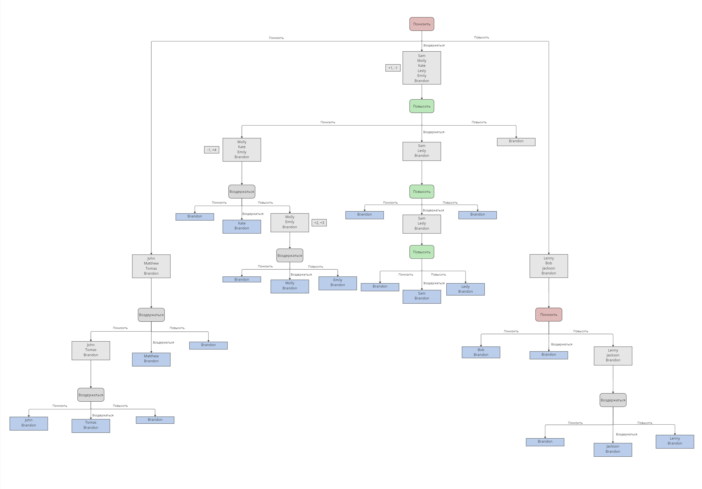

Решение модели Triple Choice Model
Ниже представлено дерево решений игры с тройным выбором минимальной глубины.
По аналогии с моделью с тройным выбором, стратегию random нет смысла отдельно угадывать.
Потому что есть вероятность, что random подстраивается под любую из стратегий.
Шансы рандомной стратегии в зависимости от номера шага:
| Номер шага |
Вероятность |
| 2 |
11.11% |
| 3 |
3.73% |
| 4 |
1.23% |
Дерево решений

Для удобства анализа дерева решений листья отменечены синим цветом,
требуемые выборы пользователя - зеленым, красным и серым соотвественно.
Представленный вариант решения не является единственным, можно привести и другие решения, в которых максимальная глубина
дерева будет 4 шага.